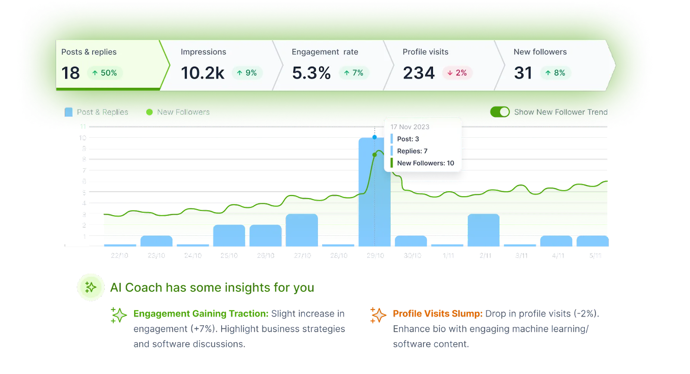

Projects

Social Media Analytics Tool
A web-based tool for analyzing social media performance and generating insights.
Learn MoreSmart Home Automation System
An IoT-based system to control home appliances remotely using a mobile app.
Learn More
E-Learning Platform
A platform for online courses with interactive quizzes and progress tracking.
Learn More